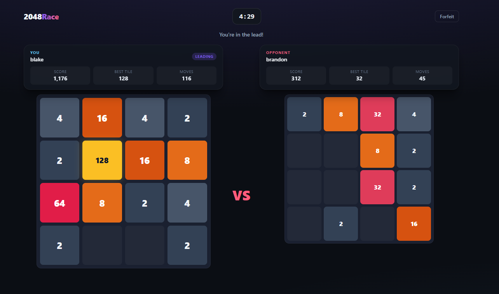

2048Race
Head-to-head multiplayer 2048. Race an opponent to the winning tile.

Real-time multiplayer 2048. Two players queue up, get matched, and race on identical rules. The first to build a 2048 tile wins instantly. Both boards are visible live, with score, best tile, and move counts side by side.
The server owns the authoritative board state: it validates every move, applies merges, spawns tiles, and decides the winner. The client never does. Play with arrow keys or WASD on desktop, or swipe on mobile. If both boards lock up, the player who survived more moves takes it.
Play itBeary the Bear
A desktop pet in the spirit of the early-2000s desk buddies.
A tiny, polished desktop bear who lives on your Windows desktop. He wanders, sits on your windows, peeks around them, watches your mouse, types along with you, dances to your music, and celebrates your finished downloads, then gets sleepy in the evening like everybody else.
Beary is a companion, not a game: no hunger bars, no leveling, no cloud, no telemetry. Just a small bear being believable, with window awareness, drag-and-dangle physics, time-of-day moods, and three bears to choose from (Brown, Polar, and Panda).
View on GitHubGet Off Your Phone
A webcam classifier that sends you to the McDonald's careers page when it catches you on your phone.
- working1%
- calculator2%
- using phone97%
- reading book0%
You have seen the reel: someone points a camera at their desk, and the second they reach for their phone, their laptop opens the McDonald's careers page. Study, or start your shift. This is that, actually built. The joke runs on a real convolutional neural network.
A Teachable Machine image model, exported to Keras and run live against a webcam. Every frame is resized to 224 by 224, normalized, and sorted into one of ten desk activities. Nine of those classes exist only so the model can tell a phone from a calculator or an empty desk, which is harder than it sounds for a small network. When it is more than 90% sure you are on your phone, your browser opens McDonald's real hiring portal, with a 10 second cooldown so it only ruins your day once every ten seconds instead of sixty times a minute.
View on GitHub